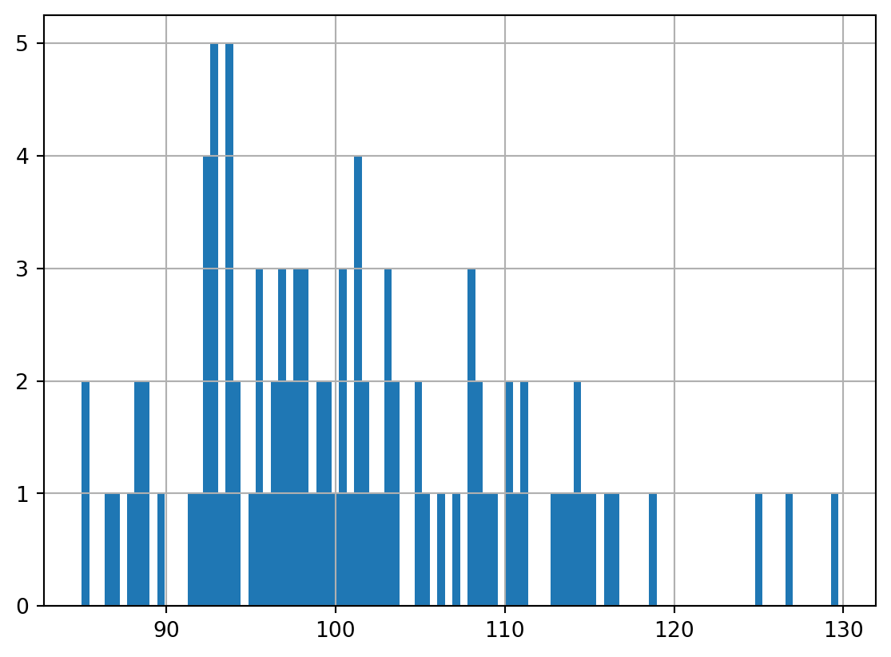
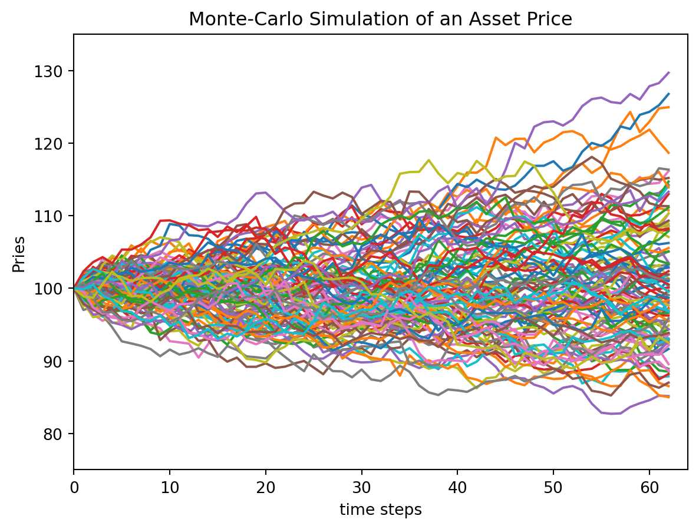
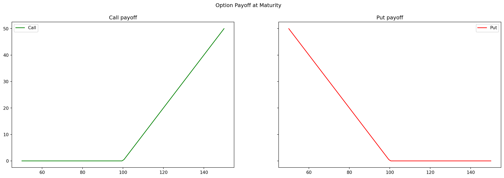
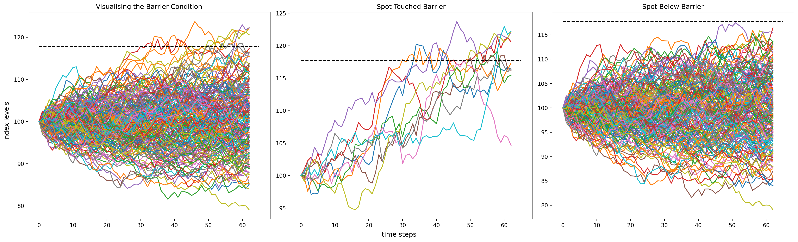

import pandas as pd
import numpy as np
def simulate_path(s0, mu, sigma, Time, num_timestep, n_sim):
np.random.seed(20230902)
S0 = s0
r = mu
T = Time
t = num_timestep
n = n_sim
#defining dt
dt = T/t
S = np.zeros((t, n))
S[0] = S0
for i in range(0, t-1):
w = np.random.standard_normal(n)
S[i+1] = S[i] * (1 + r * dt + sigma * np.sqrt(dt) * w)
return SRecall Monte-Carlo method exploits the relationship between options prices and expectation under a risk-neutral measure. It is the present value of the expectation (under a risk-neutral measure) of the payoff. In this sense \[V(S, t) = \text{PV} \space \space \mathbb{E}^\mathbb{Q} (Payoff)\]
We start with the usual SDE (except we use \(r\) instead of \(\mu\) as we are under the risk-neutral framework). \[dS_t = r S_t dt + \sigma S_t dW_t\] Using the Euler discretization \[S_{t + \delta t} = S_t \cdot (1 + r \delta t + \sigma \sqrt{\delta t} \phi)\]
Using Python
Let’s create a simulation for a quarter of a year (3 months or 63 trading days).
simulate_path(s0=100, mu=0.045, sigma=0.17, Time=0.25, num_timestep=63, n_sim=100)array([[100. , 100. , 100. , ..., 100. ,
100. , 100. ],
[ 99.39825714, 100.88405395, 100.17361119, ..., 100.79029332,
98.89439673, 99.86236711],
[ 99.50936214, 100.97945468, 99.7824842 , ..., 98.66331487,
98.67131431, 100.50278255],
...,
[100.32398459, 110.16941406, 95.79494772, ..., 101.76681189,
91.43131552, 98.94795092],
[100.93630069, 111.0365789 , 94.89177952, ..., 101.32109813,
93.37392012, 98.42725475],
[101.17836924, 110.76099538, 95.51591487, ..., 101.28364139,
92.50938162, 96.80815562]])Let’s put that into a data frame for further plotting and manipulation
Note each column of the data frame is a simulation. The number of rows is the number of time steps.
simulated_paths = pd.DataFrame(simulate_path(s0=100, mu=0.045, sigma=0.17, Time=0.25, num_timestep=63, n_sim=100))simulated_paths.iloc[-1].hist(bins = 100)<Axes: >
import matplotlib.pyplot as plt
plt.plot(simulated_paths) #plot the first 100 paths
plt.xlabel('time steps')
plt.xlim(0, 64)
plt.ylim(75, 135)
plt.ylabel('Pries')
plt.title('Monte-Carlo Simulation of an Asset Price')
plt.show()
Under the risk-neutral measure, the value of the option is the discounted value of the expected payoff. \[C = e^{rT} \cdot \mathbb{E}[max(S_T - K, 0)]\]
- \(K\) is the strike price
For this simulation, we let \(K=100\) as well!
K = 100
r = 0.045
T = 0.25
S = simulate_path(s0=100, mu=0.045, sigma=0.17, Time=0.25, num_timestep=63, n_sim=10000)
## calculate payoff for call options
Co = np.exp(-r*T) * np.mean(np.maximum(0, S[-1]-K))
## calculate payoff for put options
Po = np.exp(-r*T) * np.mean(np.maximum(0, K - S[-1]))
print(f"European Call Option value is {Co: 0.4f}")
print(f"European Put Option value is {Po: 0.4f}")European Call Option value is 3.8587
European Put Option value is 2.7757import matplotlib.pyplot as plt
sT= np.linspace(50,150,100)
figure, axes = plt.subplots(1, 2, figsize=(20, 6), sharey = True)
title = ['Call payoff', 'Put payoff']
payoff = [np.maximum(0, sT-K), np.maximum(0, K-sT)]
color = ['green', 'red']
label = ['Call', 'Put']
for i in range(2):
axes[i].plot(sT, payoff[i], color = color[i], label = label[i])
axes[i].set_title(title[i])
axes[i].legend()
figure.suptitle('Option Payoff at Maturity')
plt.show()
Asian Options
We are taking the averages of a given asset prices.
A = np.mean(S, axis = 0) # axis = 0, mean is over the columns ==> results is 1000 means. We had a 1000 simulations of 63 steps.
B = np.mean(S, axis = 1) # axis = 1, mean is row by row ==> results is 63 means
K = 100
r = 0.045
T = 0.25
S = simulate_path(s0=100, mu=0.045, sigma=0.17, Time=0.25, num_timestep=63, n_sim=10000)
# do not use S[-1] anymore (the last prices), but the average instead (here it is A)
Co = np.exp(-r * T) * np.mean(np.maximum(0, A - K))
Po = np.exp(-r * T) * np.mean(np.maximum(0, K - A))
print(f"Asian Call Option value is: {Co: 0.4f}")
print(f'Asian Put Option Value is: {Po:0.4f}')Barrier options.
Barrier options are path dependent. They’ll need another argument
Note
In a paper titled A Continuity Correction for Discrete Barrier Option, Mark Broadie, Paul Glasser- man and Steven Kou have shown us that the discrete barrier options can be priced using continuous barrier formulas by applying a simple continuity correction to the barrier. The correction shifts the barrier away from the underlying by a factor of \[exp(\beta \sigma \sqrt{\delta_t})\] where \(\beta \approx 0.5826\)
K = 100
r = 0.045
sigma = 0.17
T = 0.25
num_timestep = 63
num_sim = 10000
S = simulate_path(s0=100, mu=0.045, sigma=sigma, Time=T, num_timestep=num_timestep, n_sim=num_sim)
# Let's put the barrier at 117 ! we call it B
B = 117
delta_t = T / num_timestep
rebate = 10
value = 0
beta = 0.5826
# Barrier shift - continuity correction for discrete monitoring
B_shift = B * np.exp(beta * sigma * np.sqrt(delta_t))
print(B_shift)
# finding discounted value of expected payoff
for i in range(num_sim):
# if final price of one simulation is less that the Barrier shift
if S[:,i].max() < B_shift:
value += np.maximum(0, S[-1, i] - K)
else:
value += rebate
Co = np.exp(-r * T) * (value/num_sim)
print(f'The up-and-out Barrier Option value is {Co:04f}')117.73225187428132
The up-and-out Barrier Option value is 3.369172figure, axes = plt.subplots(1,3, figsize=(20,6), constrained_layout=True)
title = ['Visualising the Barrier Condition', 'Spot Touched Barrier', 'Spot Below Barrier']
axes[0].plot(S[:,:200])
for i in range(200):
axes[1].plot(S[:,i]) if S[:,i].max() > B_shift else axes[2].plot(S[:,i])
for i in range(3):
axes[i].set_title(title[i])
axes[i].hlines(B_shift, 0, 65, colors='k', linestyles='dashed')
figure.supxlabel('time steps')
figure.supylabel('index levels')
plt.show()
import numpy as np
import pandas as pd
import matplotlib.pyplot as plt
def create_price_path(S0, rfr, sigma, time_horizon, num_steps, num_sim):
np.random.seed(18092023)
dt = time_horizon / num_steps
S = np.zeros((num_steps, num_sim))
S[0] = S0
for i in range(0,num_steps-1):
phi = np.random.standard_normal(num_sim)
S[i+1] = S[i] * (1 + rfr * dt + phi * sigma * np.sqrt(dt))
return S
S = create_price_path(100, 0.045, 0.17, 1, 252, 10000)
# for a european option.
K = 100
r = 0.05
T = 0.55
C0 = np.exp(-r*T) * np.mean(np.maximum(0, S[-1]-K))
C09.038910855148245